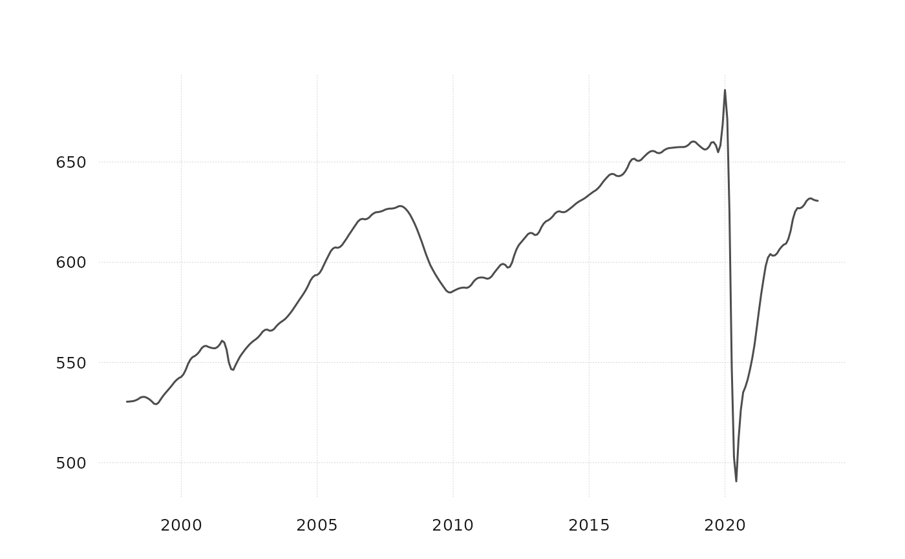

Disaggregate univariate or multivariate time series from low to high frequency
disagg.RdDisaggregate univariate or multivariate time series from low to high frequency
Arguments
- x
a ts-boxable object at a low frequency (e.g. annual or quarterly)
- conv_type
match the interpolated value via "first", "last", "sum", "mean". If conv_type == "uhero" then the name of the time series x is compared to the internal variable
sum_pattern. For matching series names the interpolation is based on "sum"; for all others it is based on "mean."- target_freq
target frequency "quarter" (default) or "month"
- pattern
a single high-frequency pattern that the interpolation should follow; it serves every series in x
- extend_with
NULL (default), "last_growth", or a ts-boxable object. Without a pattern the interpolation has nothing to follow at the end of a series and bends toward zero growth over the last periods (and the first). "last_growth" first continues each series at its last growth rate for three periods; a series (one per series in x, with the same names, or a single one for a single x) continues x with its growth at both ends, wherever it reaches beyond x. The result is cut back to x's own periods.
Details
Leading and trailing NAs of x are dropped, so the result ends at the last period with data. An NA inside a series is an error. Where the pattern covers less than x, tempdisagg drops the periods of x outside the pattern, with a message.
Examples
quarterly_data_example |>
disagg(conv_type = "mean", target_freq = "month") |>
dplyr::select(1:4) |>
head(4)
#> # A tibble: 4 × 4
#> time E_NF_HI ECT_HI EMN_HI
#> <date> <dbl> <dbl> <dbl>
#> 1 1998-01-01 530. 23.3 15.9
#> 2 1998-02-01 530. 23.3 15.9
#> 3 1998-03-01 531. 23.2 15.9
#> 4 1998-04-01 531. 23.1 15.8
# the monthly values average back to the original quarters
quarterly_data_example |>
disagg(conv_type = "mean", target_freq = "month") |>
tsbox::ts_long() |>
tsbox::ts_frequency(to = "quarter", aggregate = "mean") |>
tsbox::ts_wide() |>
dplyr::select(1:4) |>
head(2)
#> # A tibble: 2 × 4
#> time E_NF_HI ECT_HI EMN_HI
#> <date> <dbl> <dbl> <dbl>
#> 1 1998-01-01 531. 23.3 15.9
#> 2 1998-04-01 531. 23.0 15.8
# works with a single series too
quarterly_data_example |>
tsbox::ts_long() |>
tsbox::ts_pick("E_NF_HI") |>
disagg(conv_type = "mean", target_freq = "month") |>
tsbox::ts_plot()

# using a high-frequency pattern
quarterly_data_example |>
tsbox::ts_long() |>
tsbox::ts_span("2005-01-01", "2020-01-01") |>
disagg(
conv_type = "mean", target_freq = "month", pattern = monthly_data_example |>
tsbox::ts_long() |>
tsbox::ts_pick("VISNS_HI")
) |>
head(4)
#> # A tibble: 4 × 3
#> id time value
#> <chr> <date> <dbl>
#> 1 E_NF_HI 2005-01-01 594.
#> 2 E_NF_HI 2005-02-01 594.
#> 3 E_NF_HI 2005-03-01 597.
#> 4 E_NF_HI 2005-04-01 599.
# multiple low-frequency series, same number of high-frequency patterns
purrr::map2(
quarterly_data_example |>
tsbox::ts_long() |>
tsbox::ts_pick("E_NF_HI", "ECT_HI") |>
tsbox::ts_span("2005-01-01", "2020-01-01") |>
tsbox::ts_tslist(),
monthly_data_example |>
tsbox::ts_long() |>
tsbox::ts_pick("VISNS_HI", "VAPNS_HI") |>
tsbox::ts_long() |>
tsbox::ts_tslist(),
~ disagg(.x, conv_type = "mean", target_freq = "month", pattern = .y) |>
head(3)
)
#> Additional [id] column(s): 'id'
#> $E_NF_HI
#> Jan Feb Mar
#> 2005 593.5753 594.4022 596.6407
#>
#> $ECT_HI
#> Jan Feb Mar
#> 2005 32.07939 32.25980 32.74226
#>
# the last year without and with an extension
a <- make_xts(2015, val = 100 * 1.02^(0:10))
disagg(a) |> tsbox::ts_pc() |> tail(4)
#> value
#> 2025-01-01 0.6174512
#> 2025-04-01 0.4602231
#> 2025-07-01 0.3053787
#> 2025-10-01 0.1521779
disagg(a, extend_with = "last_growth") |> tsbox::ts_pc() |> tail(4)
#> value
#> 2025-01-01 0.4944892
#> 2025-04-01 0.4968292
#> 2025-07-01 0.4991225
#> 2025-10-01 0.5013695